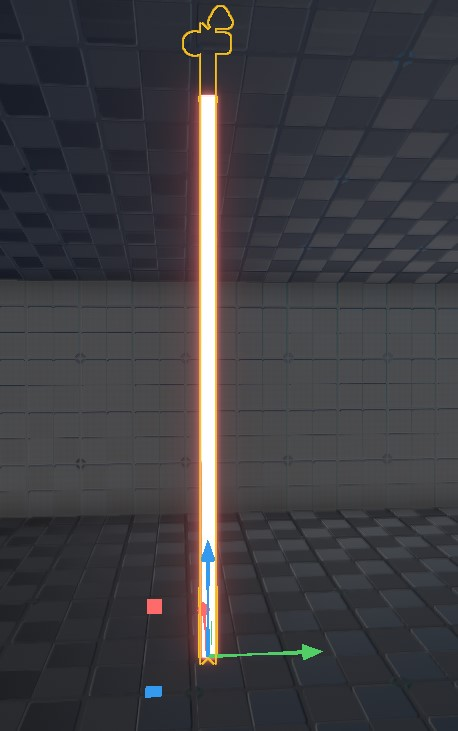

Beam Component
The beam component renders a thick line (a "beam") starting at the position of the beam component's owner game object and ending at the position of a selected target object. If the object at either end moves, the beam moves with it. The beam component can be used to implement laser beams, for example from trip mines.

The beam component is purely a graphical effect, it has no game play functionality. It also has no logic to decide how long the beam shall be. To adjust the length of the beam, the target object has to be positioned at the desired distance. The raycast placement component works well in conjunction with the beam component, as it uses a raycast to decide where to move a referenced object to. You can attach both components to the same object and let them reference the same (dummy) target object, to get a beam that always stretches towards the closest obstacle.
Component Properties
-
TargetObject: The beam geometry starts at the beam component position and goes towards the position of the referenced object. If the target object moves, the beam follows. -
Material: The material to use to render the beam geometry with. -
Color: The tint color for the material. -
Width: The thickness of the beam geometry. -
UVUnitsPerWorldUnit: How to stretch the material across the geometry.